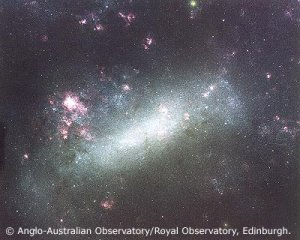
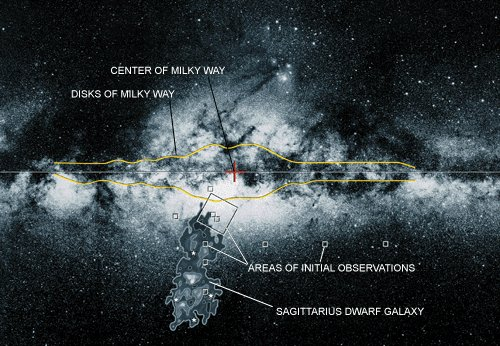
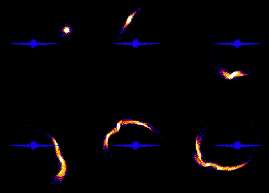
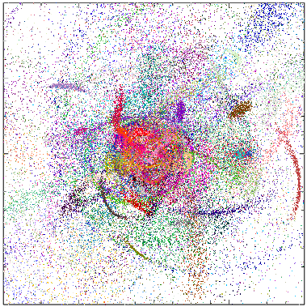
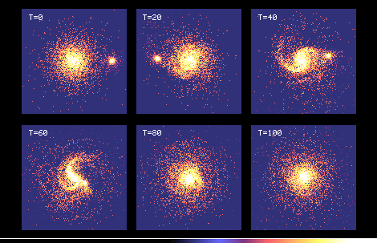
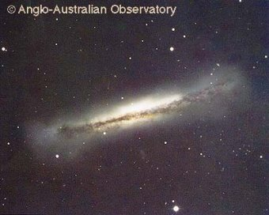

Minor Mergers and Satellite Accretion
So far we have focused on so-called "major mergers" -- mergers of two
large, roughly equal mass disk galaxies. While these represent some of the
most spectacular collisions we observe, they are far from the most common.
Because of the shape of the galaxy luminosity function, which rises at fainter
luminosities, encounters more commonly involve a galaxy interacting with a
small satellite companion. However, it turns out that even these "minor
mergers" can have a dramatic impact on the evolution of galaxies. That minor
mergers occur frequently can be seen from even a casual inspection
of the environment of our own Milky Way. The Milky Way is surrounded by
fourteen known satellite galaxies, the largest and most massive being the
Large and Small Magellenic Clouds.
| At a galactocentric distance of 50 kpc, the Magellenic Clouds are believed to orbit our Galaxy once every few billion years. The effect of this interaction is clear: tidal forces from the Milky Way have torn a long stream of gas -- the Magellenic Stream -- from these companions, and it has been argued that some of the younger Milky Way globular clusters may have been tidally stripped from the Magellenic Clouds. Recently, the discovery of the Sagittarius dwarf galaxy plunging through the galactic disk on the far side of the Galaxy has given us an up-close view of the tidal destruction of a merging dwarf galaxy. A similar system of companions surrounds the nearby Andromeda Galaxy, including the bright dwarf elliptical galaxies NGC 205 and M32. Indeed, if models of structure formation in the Universe are to be believed, all bright galaxies should have a large number of satellite companions. |  |
| Figure 14:
The Large Magellenic Cloud, a small companion to our own Milky Way galaxy. (Dave Malin/AAO) |
|  |
| Figure 15:
A schematic representation of the Sagittarius dwarf galaxy interacting
with the Milky Way. (Rosie Wyse/JHU) |
Unlike major mergers, where dynamical friction is so efficient that the
galaxies merge after only a few perigalactic passages, the extreme mass ratio
(> 10:1) of minor mergers ensures that the orbital decay of the satellite's
orbit is slow. For example, it is estimated that the orbit of the Magellenic
Clouds will decay in another ~ 10 Gyr, giving the Clouds a total
``survival time'' of ~ 10 orbital periods. Rather than the sudden
violence of a major merger, these
minor mergers are more properly a relatively slow accretion event, and the
dynamical evolution of these systems is markedly different. In particular,
the tidal field of the host galaxy will act to gradually strip material from
the orbiting companion, such that the merger may not play to completion --
the companion may be totally destroyed before reaching the inner portion
of the host galaxy. Since the tidal radius of a orbiting companion is
roughly proportional to (rhos/rhoG)1/3 where rhos and rhoG
are the average mass density of the satellite and host galaxy, respectively,
it is the low density, diffuse satellite companions which are preferentially
destroyed as they orbit their host. Low density dwarf irregulars and dwarf
spheroidals will certainly be tidally disrupted at relatively large distances
from their hosts, while compact companions (such as Andromeda's M32) may
survive the accretion process well into the host.
|  |
| Figure 16: Computer model of a small satellite galaxy orbiting a larger (edge-on) disk galaxy. As the satellite orbits, stars are stripped from the satellite andorbit in the halo of the larger galaxy. (Kathryn Johnston, Wesleyan) |
As the satellite is stripped on its orbit, this stripped material can be
incorporated into the luminous halo of the main galaxy. Over several orbits,
this stripped material will gradually spread out along the satellite's orbital
path, making a kinematically distinct ``tidal stream'' in the halo. In 1978,
Leonard Searle and Robert Zinn proposed that rather than forming in a single
monolithic event, the halo of the Milky Way formed through continual accretion
of material much like the infall of satellite galaxies. To reproduce
the observed halo luminosity of the Milky Way (LB ~ 109 Lsolar), the
Milky Way must have accreted on the order of a few hundred small satellites
during its lifetime to build the halo in this manner. Whether or not such
an evolutionary picture is consistent with the Milky Way's dynamically cold
disk (see below) or with the long dynamical friction timescales involved
remains unclear, but a variety of observations argue that some fraction
of the Milky Way's halo -- and presumably those of other spirals as well --
formed through satellite mergers. Observations of halo stars show the
presence of substructure, moving groups, and possible streams of globular
clusters and dwarf galaxies in the halo. The presence of young A stars in
the otherwise-old halo also argues for recent accretion events, while
tidally stripped material from the Sagittarius dwarf extending out more than
30o from the core demonstrate explicitly how satellite accretion can
feed the Galactic halo.
|  |
| Figure 17: A computer simulation of a galaxy halo made up of an ensemble of disrupted
satellites. Each color shows stars from a single disrupted satellite galaxy. Note how some individual streams stay intact, while others form a more diffuse halo. (Paul Harding, University of Arizona) |
|  |
| Figure 18:
A computer model of a small companion galaxy spiralling into the center
of a larger disk galaxy. Note how the large galaxy becomes distorted as the companion falls in. (Chris Mihos, Case Western Reserve University) |
If the satellite is sufficiently dense and massive, its accretion can do more
than simply build up the stellar halo of a galaxy. Such satellites more readily
survive into the inner galaxy; once there, they can strongly influence the
dynamical evolution of the disk. A N-body simulation of such an accretion event
is shown in Figure 18, where a prograde satellite with mass 10% that of the
disk merges with a larger disk galaxy. As this massive satellite plunges
through the disk, it scatters disk stars off their orbits, heating and
thickening the stellar disk. As the satellite galaxy falls to the plane
of the disk through dynamical friction, conservation of total angular
momentum dictates that the disk warp and tilt in response. The resulting
warped, thickened disk is qualitatively similar to those seen in some nearby
galaxies (such as NGC 3628) and inferred in our own Milky Way.
|  |
| Figure 19:
NGC 3628, a nearby edge-on spiral galaxy. Note the thickened, warped disk,
exactly what would be expected if had accreted a small companion galaxy in the past. (Dave Malin/AAO) |
As a massive satellite spirals into the inner disk, it can also induce strong
spiral arms and bars through a resonant response in the disk. Interstellar
gas can be compressed along these features and flow inwards towards the
nucleus due to gravitational torquing from the bar and arms, similar to, but
at a more modest level than, the major-merger induced nuclear inflows.
Thus these minor mergers can also drive increased disk and nuclear star
formation rates, or activate of a central engine. When the merger
is complete, a significant fraction of the disk gas may have been swept from
the disk and into the nucleus. The disk itself has been kinematically heated,
and spiral structure destroyed by the passage of the companion through the
inner disk. The induced bar may buckle in three-dimensional space, scattering
stars above and below the disk plane, in a pseudo-bulge. The morphological,
kinematic, and star forming properties of the disk have all been radically
altered by this interaction, suggesting that even minor mergers can drive
significant evolution in disk galaxies.